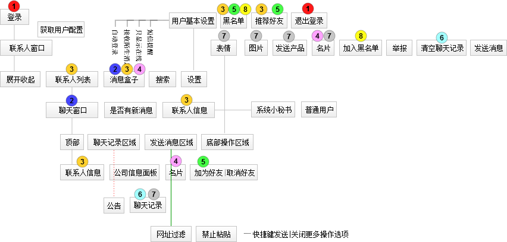

- 1.这是个什么插件？
-
此插件是凡纳网开发的基于jQuery的一款web即时通讯插件。
- 2.如何调用
-
STEP1：在需要调用的页面最后引入以下js
<script type="text/javascript" src="js/jQuery-1.7.1.min.js"></script> <script type="text/javascript" src="js/fanna_im.plus.js?skin=fanna_im"></script> <script type="text/javascript" src="js/jQuery.fnIM.js"></script>
注意：<script type="text/javascript" src="js/fanna_im.plus.js?skin=fanna_im"></script>中所带的skin参数为插件所用到的css文件，如无特殊需要，请勿更改，否则会出错！！！。STEP2:调用插件$(function() { $(document).FnWebIM(); //简单调用 });
- 3.参数设置
-
$(function() { $(document).FnWebIM({ autoLogin :true, msgRefreshTime :1000, friendRefreshTime :10000, showSecretary :true, noticeContent :"公告内容", sendPicture :true, msgMaxSize :300, msgSound :false, defaultWindow :"" }); });
- 4.【Demo】点击联系人后打开新聊天窗口
-
html:
<a class="oWindow" href="#" uid="8759328409230">联系我</a>
jQuery:$(function() { $("a.oWindow").click(function(){ var uid=$(this).attr("uid"); $(document).FnWebIM({ defaultWindow :uid //注意uid的正确性，当获取不到用户信息时，会出错！！ }); }); });
| 参数 | 类型 | 说明 | 默认值 |
| autoLogin | boolean型 | 是否自动登录，true：自动登录，false：手动登录 | true |
| msgRefreshTime | number型 | 消息刷新时间，单位为ms | 1000 |
| friendRefreshTime | number型 | 好友列表刷新时间，单位为ms | 10000 |
| showSecretary | boolean型 | 默认是否显示小秘书，true：显示，false：不显示 | true |
| noticeContent | string型 | 公告内容，为空时不显示公告 | |
| sendPicture | boolean型 | 是否允许发送图片，true：允许，false：不允许 | true |
| msgMaxSize | number型 | 单条消息最大允许字符数 | 300 |
| msgSound | boolean型 | boolean型，是否开启声音提醒，true：开启，false:关闭 | true |
| defaultWindow | string型 | 登录后打开新聊天窗口，此处接收的参数为联系人的uid， 否则会出错。为空时不打开新窗口 |
- 5.相关页面说明
-
页面 参数说明 userinfo.jsp · 从session中获取请求的用户标识(UID)；
· update:更新用户设置chats.jsp · 从session中获取请求的用户标识(UID)；
· del:清空聊天记录；
· add:查看更多记录；
· time:聊天记录刷新时间friends.jsp · 从session中获取请求的用户标识(UID)；
· time:联系人列表刷新时间company.html · uid:所请求的用户uid； friends.html · 从session中获取请求的用户标识(UID)；
· type:好友类型：推荐好友|黑名单msgbox.html · uid:所请求的用户uid； product.html · pid:所请求的产品ID； set.html 暂空 其他页面 说明 im_contact.html 联系人列表模板 im_window.html 聊天窗口模板 reprot.html 举报好友页面 share.html 产品分享页面 login.html 会话超时页面
- 6.实例演示
- 普通示例[自动登录] 点击联系人登录并弹出联系人窗口
- 7.示例图
-  查看大图